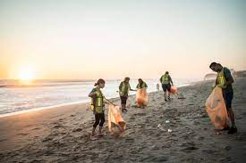
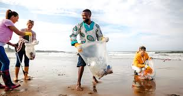

Introduction
Keeping beaches clean is a responsibility we all share. Clean beaches are vital for the health of marine life, the safety of beachgoers, and the overall beauty of our natural landscapes.In order to preserve marine life and its habitats and to guarantee that marine life can flourish in a healthy environment, it is imperative that beaches be kept clean.
Tips for Keeping Beaches Clean
Dispose of Trash Properly
Always use designated trash and recycling bins. If no bins are available, take your trash with you. Trash should be disposed of properly to help keep it out of the ocean and off the beach, where it can harm marine life. Trash should be disposed of properly to help keep it out of the ocean and off the beach, where it can harm marine life.
.jpeg)
Participate in Beach Cleanups
Join local community efforts to clean up beaches and remove litter and debris.By taking part in beach cleanups, you may positively impact the health of the marine ecosystem by removing litter and other garbage. You may encourage others to take action and advance a cleaner, more sustainable coastline by taking part in beach cleanups.
.jpeg)
Reduce Plastic Use
Opt for reusable bags, bottles, and containers to minimize plastic waste.
Avoid Leaving Food Scraps
Food scraps can attract wildlife and disrupt the ecosystem. Always clean up after your meals.
.jpeg)
Respect Wildlife
Keep a safe distance from wildlife and do not disturb their natural habitats.
.jpeg)
Spread Awareness
Educate others about the importance of keeping beaches clean and how they can help.
.jpeg)
Get Involved
You can make a difference by volunteering for beach cleanups, supporting organizations dedicated to environmental protection, and advocating for policies that reduce pollution.Aiding environmental conservation organizations strengthens the fight to save marine life and keep beaches clean and safe.Promoting laws that lessen pollution guarantees long-term solutions to maintain our beaches immaculate and our oceans clear of dangerous pollutants. Every effort matters in securing a healthy future for our beaches and marine habitats, from practical cleanups to legislative campaigning.